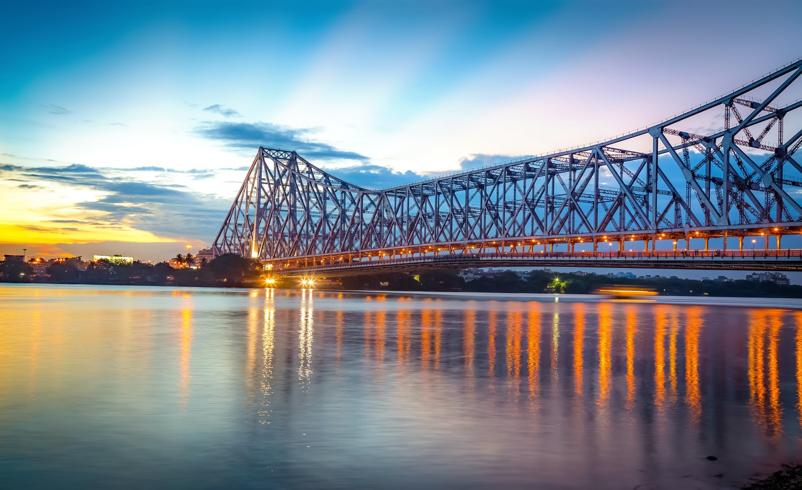

The Victoria Memorial is a large marble building, which is considered
to be the pride of Kolkata. Built between 1906 and 1921, it is
dedicated to the memory of Queen Victoria. Now, it is a museum and a
popular tourist spot under the Ministry of Culture.
ST. PAUL'S CATHEDRAL
Fig.2 - Cathedral Rd, Maidan, Kolkata, West Bengal.
Said to be the first cathedral built in the overseas territory of the
British Empire, St. Paul's Cathedral is a Anglican cathedral located
in Kolkata. Also said to be the seat of the Diocese of Calcutta, it is
a very fine example of Indo-Gothic style of architecture.
PRINCEP GHAT
Fig.3 - Hastings, Kolkata, West Bengal
Prinsep Ghat, located on the banks of River Hooghly, is a majestic
structure famous for its Greek/ Gothic inlays. IWith the magnificent
Howrah Bridge in the background, watching the sunrise or sunset and
taking a long walk in the cool air on the banks of the river are some
of the preferred recreational activities here.
KALIGHAT TEMPLE
Fig.4 - Kalighat, Kolkata, West Bengal.
Kalighat Temple, one of the 51 Shakti Sthals of India, is one of the
most visited Kali temples in India. The spot is where the toes of
Sati's right foot fell during Shiva's Rudra Taandav naach.
HOWRAH BRIDGE

Fig.5 - Howrah, West Bengal.
Located over the Hooghly river in West Bengal, Howrah Bridge or the
Rabindra Setu is the main connection between Howrah and Kolkata. It is
a cantilever bridge and is regarded as one of the busiest ones among
them.
INDIAN MUSEUM
Fig.6 - Park Street , Kolkata, West Bengal.
The Indian Museum is one of the oldest museums of the world boasting
some of the most exquisite collections of ornaments, fossils,
skeletons, antiques, armors, mummies and stunning Mughal paintings.